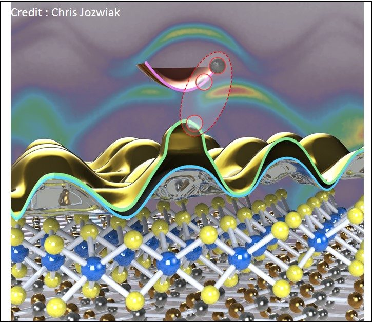
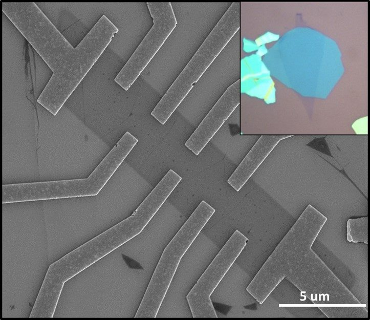
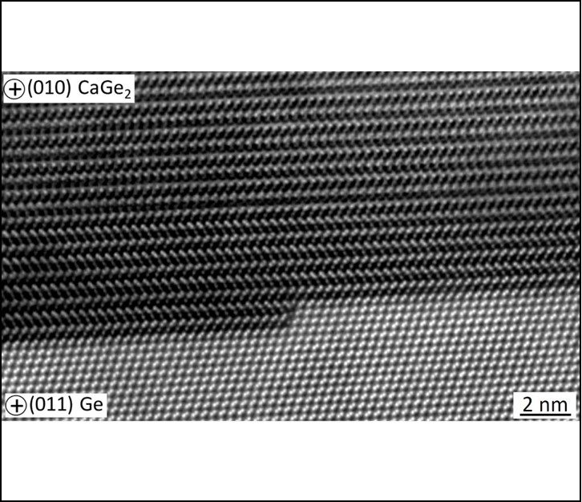
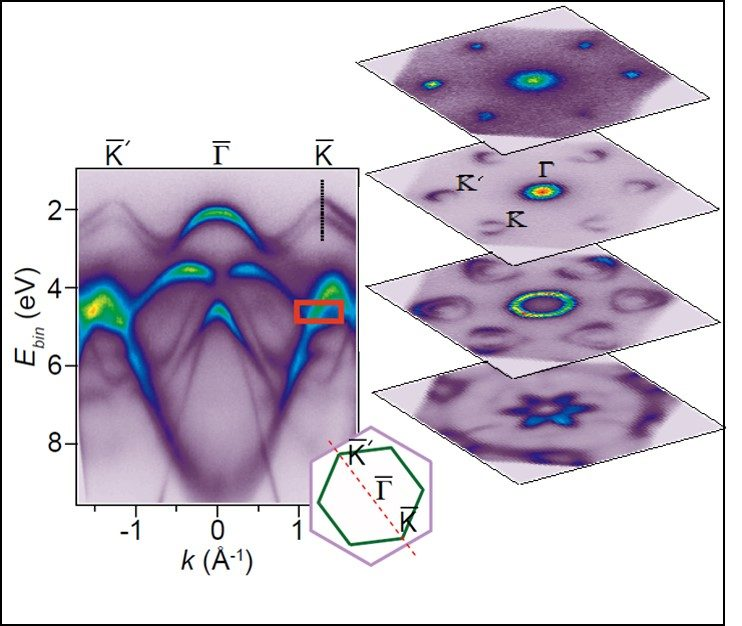
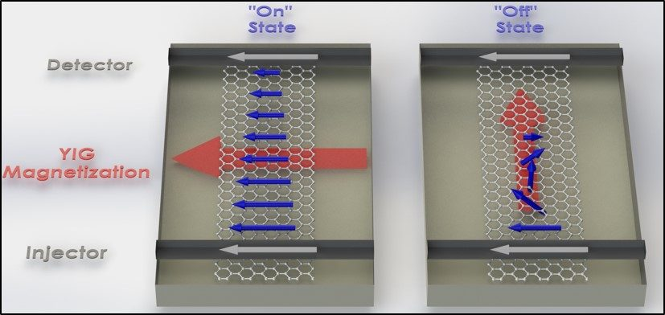
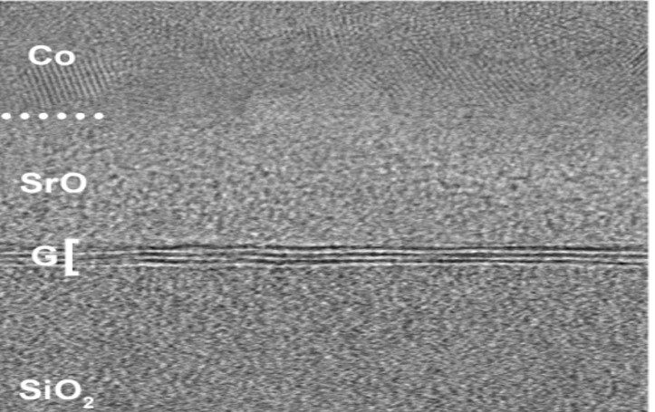
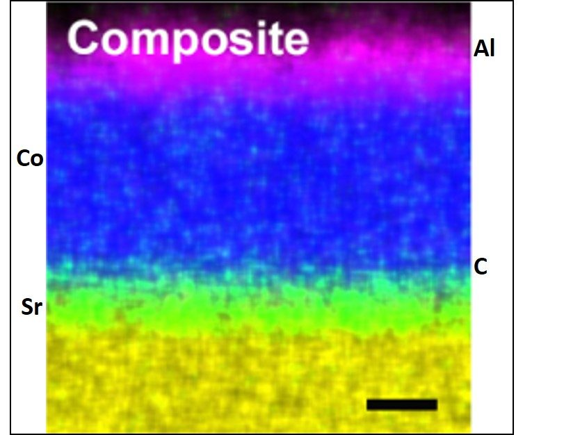

Katoch Research
Research Philosophy
We are interested in investigating the electronic, optical, and spin-dependent phenomena in novel quantum materials and their nanoscale devices. The discovery of novel quantum materials and “on demand” design of material properties will dictate the future technologies. The fundamental understanding of intrinsic physical properties of emergent materials is the first key step towards the development of next-generation quantum technologies and energy-efficient devices.
Katoch research approach involves directly probing the electronic structure of novel quantum materials — synthesized by mechanical exfoliation, heterostructure assembly, and molecular beam epitaxy — and their devices using cutting-edge photoemission spectroscopy techniques in conjunction with in-situ quantum magnetotransport measurements in ultra-high vacuum conditions. This provides a comprehensive understanding of fundamental properties of emergent quantum materials.
Research Thrusts
In-operando nanoARPES with high spatial resolution
Our group utilizes ARPES with focused spot size to directly probe the energy-momentum information of mesoscopic sized high-quality single-layer exfoliated 2D materials, their heterostructures, and devices. We have an approved program to probe the electronic band structure of 2D based devices using state-of-the-art in-operando nanoARPES (with spatial resolution reaching 120 nm) at the MAESTRO beamline at the Advanced Light Source (ALS), Berkeley. With the advent of nano-ARPES, the exploration of exotic physical phenomena in the vast library of emerging 2D materials, van der Waals heterostructures, and devices is just the beginning!

X-ray magnetic circular & linear dichroism (XMCD & XMLD)
The Katoch–Singh research groups collaborate to utilize state-of-the-art X-ray scattering techniques — specifically photoemission electron microscopy (PEEM) paired with XMCD and XMLD capabilities — to obtain a spatially resolved view of the underlying mechanisms of intriguing magnetic behavior in novel quantum materials. We are especially interested in studying the thickness- and twist-angle-dependent magnetic behavior in 2D magnets and their heterostructures. This joint experimental platform connects the electronic structure expertise of the Katoch group with the spin and magnetism focus of the Singh group to reveal how magnetic order emerges and can be controlled at the atomic scale.

Synthesis of topological materials — molecular beam epitaxy
There is an increasing demand for synthesis of high-quality novel quantum materials with exotic properties. MBE is an excellent technique to grow crystalline thin films by deposition of atoms or molecules layer-by-layer onto a substrate, with better control of doping, uniformity of epitaxial film thickness, and sharp crystalline interfaces in heterostructures. Our focus is to grow a variety of materials including 2D Si/Ge/Sn graphene analogues; topological Dirac 3D semimetals; complex oxide thin films and hetero-interfaces; and magnetic thin films (in collaboration with the Singh group). Some of these materials are predicted to exhibit exotic topological phases, such as near-room-temperature quantum anomalous Hall effect and topological superconductivity. We also tune band gap and spin-orbit coupling by surface functionalization and alloying.

van der Waals heterostructures and interfaces
The mechanical assembly of extremely clean interfaces of arbitrary atomically thin sheets of vdW materials provides unprecedented flexibility to control physical properties, modify spin-orbit coupling and band structures, and induce magnetic and topological correlations by proximity effects at the atomic limit. We use the vdW-based transfer technique in a controlled environment to assemble 2D/2D, 2D/3D, and 2D/1D cross-dimensional heterostructures to study electronic, spin, and optical properties. We are also developing a transfer tool to assemble heterostructures in ultra-high vacuum to fully exploit the intrinsic phenomena at atomically clean interfaces.
In-operando tuning of material properties
Being atomically thin, the effects of surface adsorption, electrostatic gating, Coulomb interactions, strain, and proximity-induced phenomena are more pronounced in 2D materials than in 3D counterparts. However, the “all-surface” nature of 2D materials also makes them extremely sensitive to their environment, which can be detrimental to their intrinsic ground-state properties. Our research addresses two fundamental questions: (1) What effects do external perturbations — mechanical stress, chemical environment, electrostatic interactions — have on the electronic, optical, valley, and spin-related properties of 2D materials? (2) How can surface modification and substrate engineering be used to alter physical properties? We utilize in-situ magneto-transport and optical measurements to study quantum phenomena in mesoscopic 2D devices while doping with adatoms.

Singh Research
Research Focus
Van der Waals (vdW) based materials platform provides unprecedented flexibility to control the spin properties, modify spin-orbit coupling and electronic band structure, induce magnetic correlations by proximity effects, and study spin-related phenomena emerging at the nanoscale due to reduced dimensionality. The central theme of my research is to study spins and magnetism-related emergent phenomena in vdW-based topological systems. The proposed research relies on atomically precise engineering of two-dimensional material properties, nanodevice physics, and advanced experimental techniques to probe spins and magnetism at the mesoscopic scale.
Research Thrusts
Topological spintronics
Topology and symmetry breaking are at the heart of emergent phenomena in novel quantum materials. Topological materials host spin-momentum locked electronic states that can be used for an efficient spin-charge interconversion and a plethora of other novel phenomena that are highly relevant for spintronics. We are interested in exploiting the interplay of topology, symmetry breaking, and spin-orbit coupling in emergent topological materials — such as Weyl semimetals and topological insulators — for efficiently generating spin current with controllable spin polarization for manipulating magnetic order to enable magnetic memory, spin-logic, and stochastic bits.

Probing spin dynamics
We are exploring bilayer systems of ferromagnets (and antiferromagnets) and atomically thin quantum materials — e.g., graphene, TMDs, and other emergent topological materials — for dynamical spin pumping and spin-charge interconversion. We want to understand how topology alters dissipative processes, e.g., magnetic damping, which can lead to new frontiers for topological spintronics. For this, we are developing experimental techniques to study spin dynamics in mesoscopic-sized vdW-based quantum materials and developing new quantum sensor platforms to probe spin dynamics.

Emergent magnetism and spin phenomena
Emergent spin excitations are predicted to have a revolutionary impact on topological quantum computing and sensing applications. Fractionalized topological excitations are expected to emerge as quantum spin liquid (QSL) states, which are inferred to exist in layered materials (α-RuCl₃ and 1T-TaS₂). Currently, there is an intense research effort to study unusual magnetic excitations in QSL candidate materials. We are exploring whether coherent spin fluctuations in a QSL system can couple to nearby itinerant spins (or dynamic magnetization), through which the QSL phase can be probed electrically. We are also interested in studying novel spin phenomena such as hydrodynamic-like (viscous) spin transport and spin-drag mechanisms originating from Coulomb interactions in quantum double layers.

Selected papers for each thrust are on the Publications page.